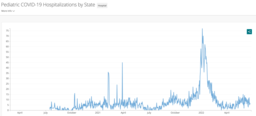

2022-06-22
Allegheny County & Pennsylvania #covid hospitalization & variants thread for 2022-06-22
Allegheny County
Allegheny reports 1677 new cases.
Hospitalizations are +0 to 151
ICUs are -7 to 21 (72% full)
7 day avg drops to 234 cases/day
Transmission risk: High
CDC Community level: Low
{kind=link}
{kind=link}
{kind=link}
Pennsylvania
Pennsylvania reports 15001 new cases.
Hospitalizations are +18 to 1025
ICUs are -21 to 109 (78% full)
7 day avg drops to 2097 cases/day
Transmission risk: High
{kind=link}
{kind=link}
{kind=link}
Vaccinations
Allegheny County daily vaccines at 243 1st+2nd doses, 222 booster doses/day (5 day lagged 7 day avg)
Fully vaccinated %s:
Allegheny County: 69.2%, 51.6% of those are boosted, 16.6% of boosted got 4th dose.
Hospitalizations
PA counties with full ICU beds due to covid: Clearfield, with 2 +covid patients in the ICU.
PA-wide hospital census: Using 16905 med/surg beds, 29 more than last week, 69 less than 2 weeks ago. Like covid hospitalizations statewide, generally flat, but the drop in ICU use is nice.
With 6mo-5y vaccinations rolling out, expect the total % vaccinated to probably go from 69% to 70 or 71% after a month or so depending on uptake. Won't have huge effects on transmission but will help reduce pediatric cases. Down from peak, but # ped hosp is still elevated.
Note that graph is hospital admissions; There are 30 pediatric patients hospitalized with covid statewide right now.
{kind=link}